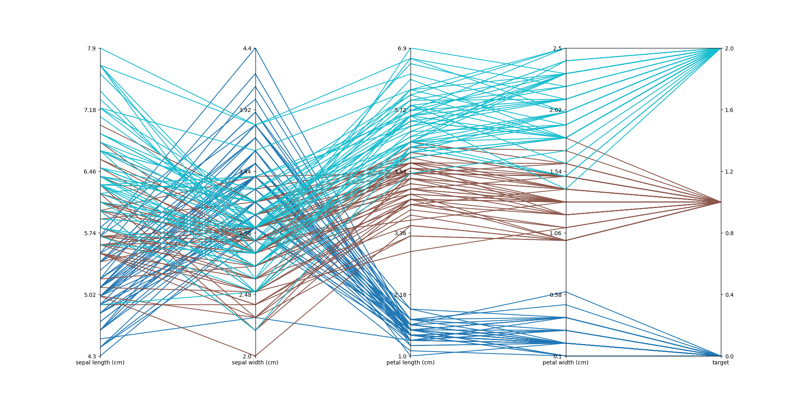

Plotting Ungrouped Scalars¶
Here there are the classes that plot ungrouped scalars
-
class
plotszoo.scalars.ScalarsParallelCoordinates(data, groups, target)¶ Plot a parallel coordinates plot with respect to
groupsand usingtargetas rightmost field- Args:
- data
plotszoo.data.DataCollectionwith some scalars- groups
columns of
datascalars to plot the data against- target
column of
data, plotted rightmost and used to color the plot
Example:
import numpy as np import pandas as pd import os import matplotlib.pyplot as plt from sklearn.datasets import load_iris import plotszoo iris = load_iris() scalars = pd.DataFrame(data= np.c_[iris["data"], iris["target"]], columns=iris["feature_names"] + ["target"]) data = plotszoo.data.DataCollection() data.set_scalars(scalars) fig, axes = plt.subplots(1, len(iris["feature_names"]), sharey=False) parallel_plot = plotszoo.scalars.ScalarsParallelCoordinates(data, iris["feature_names"], "target") parallel_plot.plot(axes, cmap="tab10") fig.set_size_inches(20, 10) plt.savefig(os.path.join(os.path.dirname(os.path.realpath(__file__)), "images/ScalarsParallelCoordinates.png"))
-
plot(axes, ticks=6, adjust_whitespaces=True, cmap='Blues')¶ Plot the parallel coordinates chart
- Args:
- axes
List of
matplotlibaxes to plot to (you must use the same number of axes and groups)- ticks
Number of ticks to show in the axes (Default: 6)
- cmap
matplotlibcolormap to use (Default: “Blues”)- adjust_withspaces
Call
plt.subplots_adjust(wspace=0)to make the plot prettier (can have side-effects) (Default:True)
{kind=link}
-
class
plotszoo.scalars.ScalarsScatterCumulative(data, x, y, cumulative_fn=<function amax>)¶ Plot a scatterplot with some running cumulative function (ex. maximum, minimum, mean, sum, …)
- Args:
- data
plotszoo.data.DataCollectionwith some scalars- x
Index to use as x in the scatter plot (set to
Noneto use theDataFrameindex)- y
Index to use as y in the scatter plot (required)
- cumulative_fn
Cumulative function to use (Default:
np.max)
Example:
import numpy as np import pandas as pd from scipy.stats import norm import os import matplotlib.pyplot as plt import plotszoo x = np.linspace(norm.ppf(0.01), norm.ppf(0.99), 20) pdf = pd.DataFrame(norm.pdf(x)/norm.pdf(x).sum(), columns=["pdf"]) data = plotszoo.data.DataCollection() data.set_scalars(pdf) fix, ax = plt.subplots() scatter_cumulative = plotszoo.scalars.ScalarsScatterCumulative(data, x=None, y="pdf", cumulative_fn=np.sum) scatter_cumulative.plot(ax) plt.savefig(os.path.join(os.path.dirname(os.path.realpath(__file__)), "images/ScalarsScatterCumulative.png"))
-
plot(ax, sort=False)¶ Plot the cumulative scatter plot
- Args:
- ax
matplotlibax to plot to- sort
Sort the x data (Default:
False)
{kind=link}